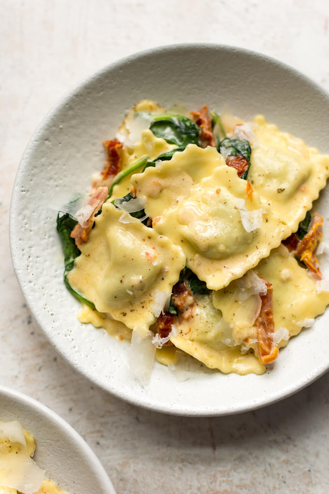

Ravioli, Ravioli, Give Me the Formu-oli!

This ravioli will have you feeling like you're on vacation in Italy!
Italian food is comfort food. We're pretty sure they're synonyms in the Merriam-Webster Thesaurus. Pizza, subs, pastas - need we say more? Today, we're talking pasta *chef's kiss*. And not just any pasta - we're talking about densely stuffed, thicc boi, saucy, ravioli!
C'mon, guys. It's pasta. Just boil the things and heat up some sauce and mix it all together. Let's get to it.
Ingredients
- 1 pack ravioli
- 1 jar of your favorite pasta sauce
- 3 tbp salt
- In a pot, fill up water to about 3/4 of the to the top, and place pot over high heat. Add all salt to the pot. Bring to a boil.
- When water reaches a rolling boil, add all pasta to pot.
- As pasta is boiling, add all pasta sauce to a large saucepan over low heat.
- When pasta has boiled according to instructions on packaging, transfer pasta to saucepan with heated sauce. Do not drain pasta.
- Add 1-2 tablespoons of pasta water to the saucepan.
- Thoroughly mix pasta with pasta sauce until combined and flavor is absorbed. Serve on a plate and enjoy!